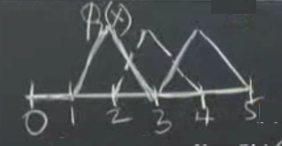
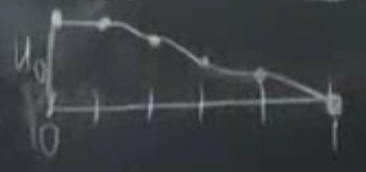
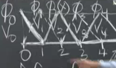

Sonlu Öğeler, 2. Bölüm
Üzerinden geçelim, sistem zayıf form ile ise başlar. Önceki dersin sonunda Galerkin fikrini tanıştırdık, sürekli diferansiyel denklem yerine onu ayrıksal temsil etmeye uğraştık. Galerkin bunun için bazı deneme fonsiyonları kullanır onlara $\phi_1,...,\phi_N$ diyelim, ayrıca test fonksiyonları da vardır (fakat çoğunlukla test fonksiyonları ile deneme, yani $\phi$ ve $v$ fonksiyonları aynı seçilir). Bugün işleyeceğimiz bu fonksiyonların nasıl seçildiği ve hazırlık aşamasını gösterdikten sonra bunun verdiği $KU = F$ denklemin nasıl çözüldüğü. $K$ nereden geliyor, $F$ nereden geliyor? $F$ bir şekilde alttaki ikinci denklemin (oktan sonra) sağ tarafından geliyor, $K$ ise sol tarafından.. Detayları şimdi göreceğiz.
$$ - \frac{\mathrm{d}}{\mathrm{d} x} \left( c(x) \frac{\mathrm{d} u}{\mathrm{d} x} \right) = f(x) \to $$
$$ \int _{0}^{1} c \frac{\mathrm{d} u}{\mathrm{d} x} \frac{\mathrm{d} v}{\mathrm{d} x} \mathrm{d} x = \int _{0}^{1} f(x) v(x) \mathrm{d} x \qquad (1) $$
ki eger $u(1)=0$ ise $v(1) = 0$ (sinir sarti).
Sonlu ogeler metotunun (FEM) temeli $KU = F$. Ustteki denklemde okun sol tarafi diferansiyel denklemimiz, sinir sartlari vs ile "guclu formda", oktan sonrasi zayif form, ki onun da kendi sinir sartlari var. Sabit degiskenler guclu formdan zayif forma geciyor, ama serbest degiskenler gecmiyor. $v$'yi $u$'dan olan ufak sapmalar olarak gordugum icin eger $u$'yi sabitliyorsam $v$ de sabitleniyor.
Tum bunlari gorduk ama hala ayaklarimiz yere basmadi; bir cok fikirden bahsettik, ama simdi daha gercek dunyaya baglanacagiz. Gercek dunya demek tabii $\phi$'lerle alakali, hangi somut fonksiyonlari $\phi$ olarak sececegiz?
Acaba ornek bir $\phi$ ne olabilir? Mesela $x=2$ noktasinda tepe yapan bir parcali lineer fonksiyon kullanabilirim,

Bu fonksiyona $\phi_2(x)$ diyelim, 1 ila 3 arasinda 2 uzerinde tepe yapiyor diger yerlerde ya lineer egimi var, ya da degeri sifir. Her $\phi$ maksimum tepe noktasi 1 olarak secilebilir. Onun sagindaki $\phi_3$ olabilir, benzer bir fonksiyon sadece 3 degeri bazli tanimli. Buradaki ana amac sistemi basit ogeler uzerinde insa etmek. FEM'in ana fikri budur; $\phi$ icin basit fonksiyonlar kullan. Bu basitligin devami olarak $\phi$ ve $v$ fonksiyonlarini ayni sec.
Peki sinir noktalarinda ne olacak? Ustte serbest-sabit problemi cozecegim, sol uc nokta serbest, sag uc nokta sabit (sinir tanimlanmis).
Ustteki resme bakarsak, $x=0$ icin bir "yarim sapka" fonksiyonu tanimladim, $\phi_0$ diyelim, ve eger diger ucgen fonksiyonlara tam sapka dersek bu da yarim sapka. O noktada $\phi$ ve $v$'lerim kisitli degiller. Boylece elimde bes tane deneme fonksiyonu oluyor, $\phi_0$, $\phi_1$, $\phi_2$, $\phi_3$, $\phi_4$.
Amac nedir? Yaklasik FEM cozumum $U(x)$'in ustteki basit sapka fonksiyonlarinin bir kombinasyonu olmasini istiyorum.
$$ U(x) = U_0 \phi_0(x) + ... + U_4 \phi_4(x) \qquad (2) $$
$U_0,..,U_4$ degerleri skalar, tek sayi.. onlar ilk basta bilinmeyen "agirlik" degerleri, $\phi$'leri belli sekilde carpacaklar ve bu carpimlarin toplami yaklasik bir $u$ olacak.
Bu kombinasyonlar neye benzerdi acaba?

Baslangictaki deger niye $u_0$? Cunku orada tum diger $\phi$ fonksiyonlari sifir seviyesinde, hemen yandaki $\phi_1$ bile orada sifir ve maksimum $\phi$ deger 1 oldugu icin baslangic degeri $u_0$.
Bu arada Galerkin, ismini tasiyan yontemi bulurken, aklinda erismeye ugrastigi belli bir cozum fonksiyonu vardi, ve sapka fonksiyonlarini oraya varmak icin secmisti fakat modern FEM yaklasimlarinda, yazilimlarinda bir temel fonksiyonu ilk bastan seceriz, problem hakkinda bir sey bilmesek bile. Sapka fonksiyonlari bu fonksiyonlardan biridir.
Sonlu ogeler temel fonksiyonlari dugum noktalariyla baglantilidir, bu baglamda sonlu farklilikler (finite differences) metotuna benzer (tabii FD ile esit aralikla bolmek gerekir, FEM ile bu zorunluluk yok), ogeler dugum noktalarina oturtuluyor. FEM ile sapka fonksiyonu ozelinde her dugum noktasindaki $u$ degerinin o noktadaki agirlik degeri ile ayni olmasini zorlamis oluyoruz; mesela 1 dugumundeki deger nedir? $u_1$! Cunku orada diger tum sapka fonksiyonlari sifirdir, sadece $\phi_1$ degeri 1, toplanan tum terimler yokoluyor geriye sadece $u_1 \phi_1 = u_1$ kaliyor.

FD benzerligi hakkinda, $KU=F$'i olusturdugumuzda onun bir FD denklemine oldukca benzedigini gorecegiz, arada yapisal farklar var tabii, FD ile ayriksal denklemleri biz tanimliyoruz, FEM ile sadece baz ogeleri seciyoruz denklemin ne oldugunu Galerkin yontemi bize soyluyor.
Simdi bize lazim olan ustteki resimdeki her nokta icin ayri bir denklem, yani toplam 5 tane denklem. Bu denklemler nereden gelecek? Kritik bir soru.
Bu denklemler zayif formdan gelecekler. Sunu yapiyorum, (1)'deki $u$ yerine (2)'deki $U$'yu sokuyorum. Ayrica bir $v$ lazim, daha once $v(1)=0$ sarti takip edilmek suretiyle herhangi bir $v$ olabilir demistik, ama simdi ayriksal forma gectik, ben de $\phi_i$ fonksiyonlarini $V_i$ fonksiyonlarim icin kullanmaya karar veriyorum. Boylece,
$$ \int _{0}^{1} c(x) \frac{\mathrm{d} U}{\mathrm{d} x} \frac{\mathrm{d} V_i}{\mathrm{d} x} \mathrm{d} x = \int _{0}^{1} f(x) V_i(x) \mathrm{d} x \qquad (3) $$
ki $i=0,1,2,3,4$. Boylece 5 tane denklem elde ediyorum, 5 tane $V$ ile ana formulu "test ediyorum". Yani ustteki denklemi 5 tane $V$ icin farkli sekillerle uretmis oluyorum. Iste 5 x 5 sistemim bu. Neler yaptim simdiye kadar? Baz fonksiyonlarini sectik, onlari zayif forma sokuyoruz. $\mathrm{d} U / \mathrm{d} x$ agirlikli toplamdan geliyor (dikkat tum $V$'leri kullanarak), sonra $\mathrm{d} V_i / \mathrm{d} x$ sokuyoruz, ve entegrali hesapliyoruz. FD durumunda bu hesap yoktu, entegral hesabi yani, FEM ile var, esitligin hem saginda hem de solunda. Esitligin sagindaki entegral her $V_i$ icin bize bir $F_i$ verecek, yani $F$ vektorunun bir satirini. Tabii $K$ matrisi esitligin solundan bir sekilde cikacak, nasil birazdan gorecegiz.
Ornek 1
Sag tarafa bakalim once, mesela $i=0$ icin, $f(x)=1$ olsun (ornege gore boyle) bu durumda $\int_{0}^{1} 1 \cdot V_0(x) \mathrm{d} x$ entegrali ne olur? Entegral bir alan hesabidir hatirlarsak, o zaman

$V_0$ ustteki ilk yarim sapka, o ucgenin alani, eger $x$ ekseni esit araliklarla bolmussek ve her aralik $\Delta x$ ise, $(\Delta x \cdot 1) / 2 = \frac{\Delta x}{2}$.
Dikkat 0 ila 1 arasi entegral ustteki resimdeki tum yatay ekseni kapsar, 0,1,2,.. indisleri kafa karistirmasin. O indisler $x=0$ ile $x=1$ arasini indisliyor. O zaman 0 ile 1 arasi entegral tum $V$'lerin oldugu alan uzerinden alinir, fakat biz her seferinde birini sectigimiz icin onun alanini hesaplamis oluyoruz cunku mesela $V_0$ tanimlandigi yer sonrasinda sifir degerinde.
$i=1$ icin ne olur? $\int_{0}^{1} 1 \cdot V_1(x) \mathrm{d} x$, ucgen tabani $2 \Delta x$, carpi 1, sonuc $\Delta x$. diger $V$ degerleri benzer sekilde, o zaman $F$ vektor su sekilde,
$$ F = \left[\begin{array}{c} 1/2 \\ 1 \\ 1 \\ 1 \\ 1 \end{array}\right] $$
$K$ icin hazir miyiz? Anahtar bolum orasi.
(3) formulunun tum sol tarafi $KU$'yu vermeli.. Satir satir gidelim, mesela sifirinci denklem hangisi? $i=0$ oldugu zaman, yani $V_0$ kullanilan, zayif formu $V_0$ ile test ettigimiz durumdur. Her seyi acarak yazarsak,
$$ \int _{0}^{1} c(x) \left( U_0 \phi_0' + ... + U_4 \phi_4' \right) \frac{\mathrm{d} V_0}{\mathrm{d} x} \mathrm{d} x = F_0 = \Delta x \cdot \frac{1}{2} $$
Su ana kadar eldekileri matris formunda yazarsak,
$$ \left[\begin{array}{rrrrr} & & & & \\ & & & & \\ & & & & \\ & & & & \end{array}\right] \left[\begin{array}{r} U_0 \\ U_1 \\ U_2 \\ U_3 \\ U_4 \end{array}\right] = \left[\begin{array}{r} F_0 \\ F_1 \\ F_2 \\ F_3 \\ F_4 \end{array}\right] $$
Bos matrisin ilk satirini $V_0$'yi kullanarak yapacagim entegral hesabindan elde edecegim. Daha kolay baslayalim, ilk satirin sol ilk hucresine ne gelir? $K_{00}$ diyelim, oradaki deger $U_0$'i carpiyor degil mi ve bir sekilde entegralinin alinmasi lazim.. Soyle olabilir mi?
$$ K_{00} = \int _{0}^{1} c(x) \phi_0' V_0' \mathrm{d} x $$
$c(x)$ icin simdilik 1 kabul edelim. Fakat eger 1 olmasaydi daha cetrefil bir fonksiyon olsaydi? Icinde $c(x)$ olan bircok entegrali ustteki gibi hesaplamak lazim, ve bu hesaplarin kesin olmasi gerekmeyebilir, yani bu entegralleri yaklasik olarak hesaplasak ta yeterli olabilir. Sonucta diger her seyi yaklasik yapiyoruz degil mi? Belli noktalar uzerinden yaklasik bir temsil yaratiyoruz vs.. Bu cercevede eger ustteki turden entegralleri hesabin tumunu bozmayacak seviyeye yetecek kesinlik3te hesaplayabilirsek, isimizi halletmis oluruz. $c(x)$ 1 olunca tabii ki kesin cozumu bulacagiz ama diger tur durumlar icin aklimizda olsun.
Hesabin kendisine gelelim. $\phi_0'$ nedir? Bu arada $\phi$'leri $V$ ile ayni sectigimiz icin $\phi_0' = V_0'$ ve her iki turev ustteki resimdeki bastaki yarim ucgenin egimi. Egitim dikey artis bolu yatay artis, yatay kisim $\Delta x$, o zaman 1'inci dugume kadar $- 1 / \Delta x$, sonrasi sifir.
Bu vurgulanmasi gereken bir noktaya goturuyor, fonksiyonlarimiz yerel / lokal. Bu ne demek? Eger $\phi_1'$ turevini $V_4'$ tureviyle entegre etseydim ($K$ matrisinde 4'uncu satir ile 1'inci kolon degeri yani) ne olacakti? Sifir olacakti. Niye? Cunku bu fonksiyonlar yerel, 0'inci ve 4'uncu dugumlerden uzakta degerleri sifir, sifir olmadiklari yerler cakismiyor. Simdi bu dinamigi tum matris icin dusunursek ne kadar az cakisma yeri oldugunu gorebiliriz. Herhangi bir $\phi$ mesela, tabii ki kendisiyle cakisir ve yanindaki komsularla biraz cakisir. Ama daha ilerisiyle ortusmesi yoktur. Bu bize $K$ icin üçlü köşegen bir matris verecek, uc ogeli kosegen bantinda degerler olacak, geri kalan her yer sifir.

$K_{00}$ hesabina donelim, $c(x)=1$, $\phi_0' = -1/\Delta x$, $V_0'$ ayni deger, ve entegre ettigimizi unutmayalim, 0 ile 1 arasi ama aslinda 0 ile $\Delta x$ arasi cunku sadece oraya kadar degerler var, o zaman $K_{00} = 1/\Delta x$ oluyor.
Peki
$$ K_{11} = \int _{0}^{1} c(x) \phi_1' V_1' \mathrm{d} x $$
$\phi_1$ egimi nedir? Bu sapka fonksiyonu tam, $\Delta x$'e kadar yukari cikiyor sonra asagi iniyor, o zaman
$$ \phi_1' = V_1' = \left\{ \begin{array}{rc} 1/\Delta x & 0 < x \le \Delta x \\ -1/\Delta x & \Delta x < x \le 2\Delta x \end{array} \right. $$
$\phi_1'$ ve $V_1'$ carpimi her iki bolum icin $1/\Delta x^2$ verir. Peki $K_{11}$ entegral sonucu ne o zaman? $2 \Delta x$ degil mi? Cunku bu sefer entegral sinirlarina dikkkat, 0 ile $2\Delta x$ arasinda.
$$ K_{11} = \int _{0}^{2\Delta x} c(x) \phi_1' V_1' \mathrm{d} x = 2\Delta x $$
[devam edecek]